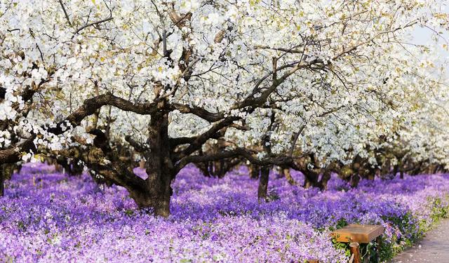
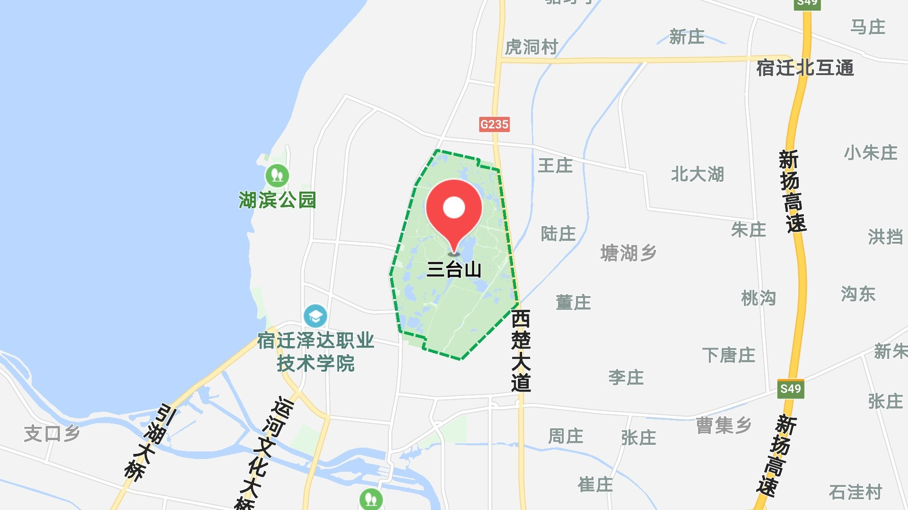
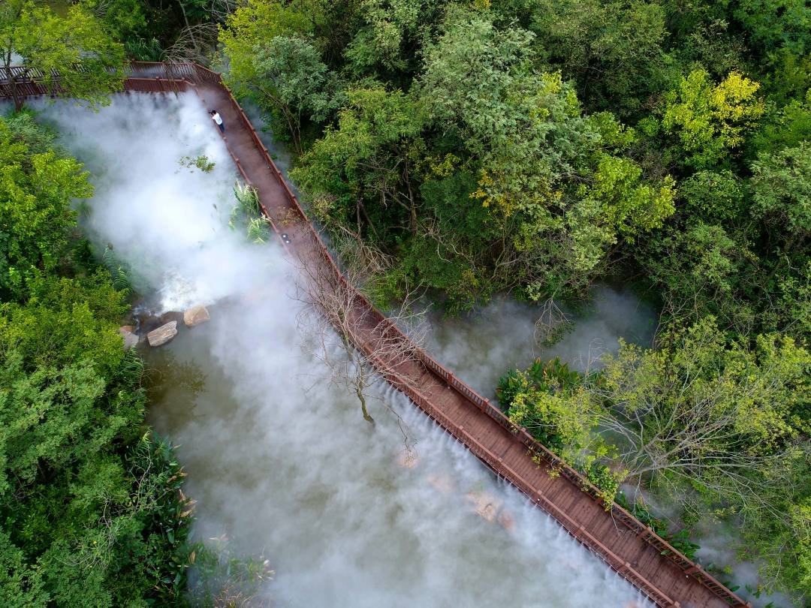

三台山公园位于江苏省宿迁市，坐落在骆马湖畔，占地12.7平方公里，是国家级旅游景区。以“最美的生态，永远的时尚“为设计理念，以”那山，那水，衲田“为核心产品。
地址：宿迁市骆马湖畔
门票：60元/人
到达交通：乘104/101/812路公交车均可直达三台山公园。
推荐定位：那山，那水，衲田
春看衲田花海，夏有曲水风荷，秋赏红枫之恋，冬来梅村煮雪。最美的林、最美的红叶、最美的建筑、最美的溪涧等八大最美系列，编制出意境优美、浪漫温馨、人与自然和谐共生的美好画卷。
公园内的”衲田花海“，总面积2220亩，由612块花田“缝补拼接而成，融合了北方旱梯田的雄浑和南方水梯田的俊秀，与僧人袈裟异曲同工，又兼具纳祥聚福之意，朴质却熠熠生辉。这里栽植着50多种花卉，自南向北形成黄、红、紫三大色区，呈现出海纳百川之态、兼容并蓄之美。站在全长2.3公里的彩虹桥俯瞰花海，听花开花落，嗅浓郁芬芳感受浓浓的原乡情怀。
三台山共有相思湖、天鹅湖、晴翠湖等8个湖泊，新增水面1800亩，总水面约2000亩，总蓄水量180万立方。其中最大的湖是镜湖，水域面积约450亩，最深处达5米镜湖之名得于“菩提本无树，明镜亦非台”一句禅诗，也因站在碧波荡漾的镜湖堤岸上看那一片湖水太过清澈太过明镜，如镜子一般倒印着蓝天白云，便有了这么一个好听又亲切的名字。
品一段佛缘，闻三分诗意。天和塔是宿迁第一佛塔，寓意“天人合一，和谐共生“骨子里充满了安谧、怀旧、历史的情怀，像是一张播放着的老唱片。在塔顶极目远眺，十里风光尽收眼底！